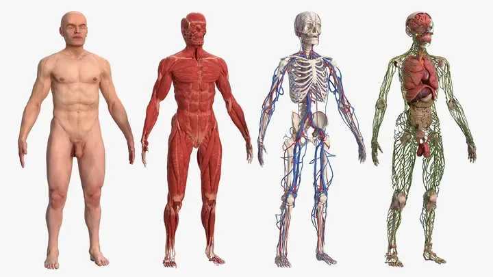

Anatomy
Male Full Body Anatomy and Skin 3D Model
Male Full Body Anatomy and Skin is a presentation-ready anatomy 3D model for medical visualization, education, healthcare animation and close-up explanatory renders. It is especially useful when a scene needs clear anatomical structure, realistic surface detail and compatibility with professional pipelines such as 3ds Max, Blender, Maya, Cinema 4D, FBX, OBJ, Unreal Engine and Unity.